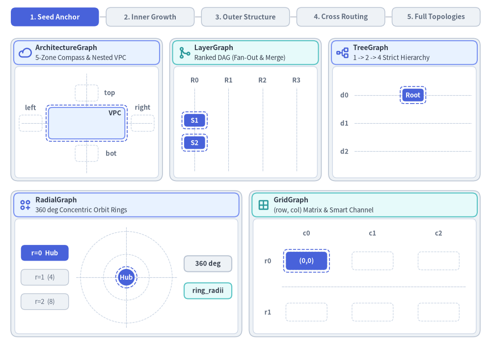
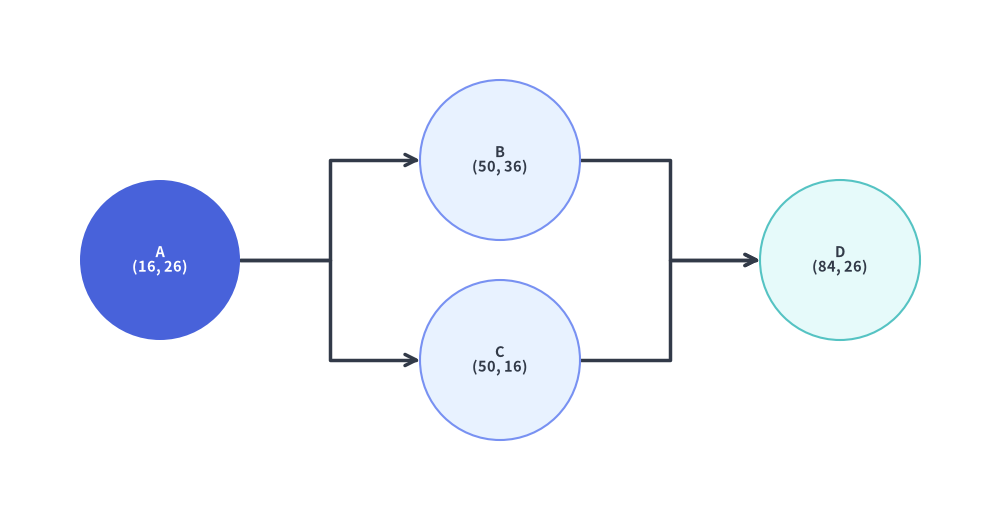
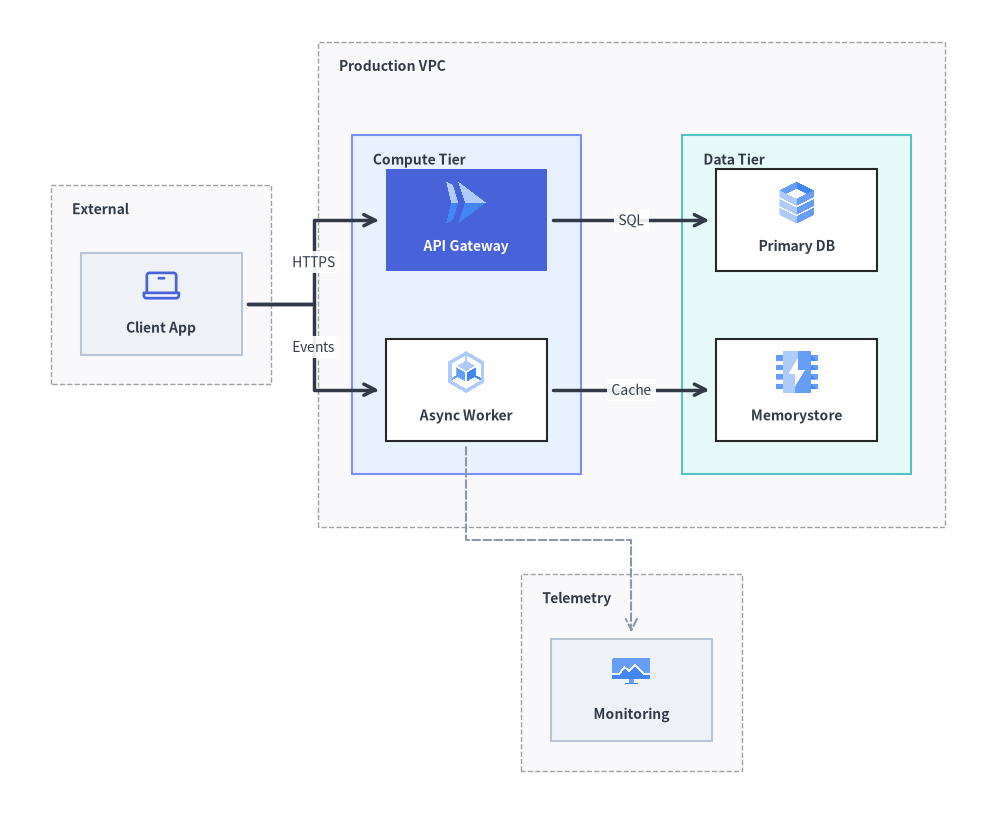
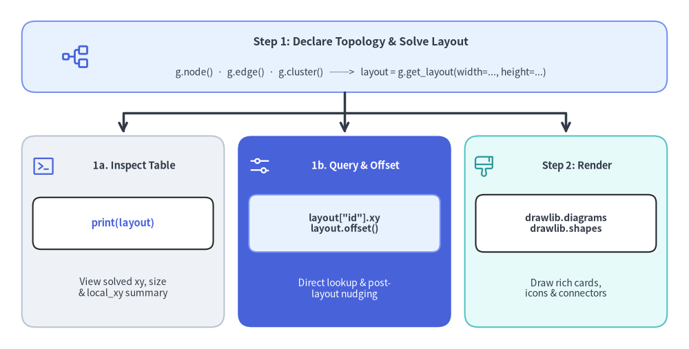

グラフエンジン概要 (drawlib.graph)
drawlib.graph は、5 つの専用レイアウトソルバー（ArchitectureGraph、LayerGraph、TreeGraph、RadialGraph、GridGraph）を備えた宣言型の純粋な座標・レイアウト計算エンジンです。
複雑なトポロジを設計する際にすべての頂点やコンテナの (x, y) 座標を手計算する代わりに、ノード・エッジ・クラスタといった構造的な関係を宣言して layout = g.get_layout(width=..., height=...) を呼び出すだけで、Drawlib の純粋 Python レイアウトアルゴリズムが整然とした座標、コンテナのバウンディングボックス、直交または放射状のエッジ経路を自動計算します。以下のステップアニメーションが示すとおり、各ソルバーは固有のトポロジ座標モデル（5 ゾーンのネスト VPC コンテナ、ランク付き DAG のファンアウト／マージ列、厳密なツリー階層、360 度の同心円軌道リング、スマートチャネル付き 2D マトリクススロット）に沿って段階的に展開されます。計算された座標は、drawlib.diagrams や drawlib.shapes、drawlib.lines を使って描画します。

Source Code
from __future__ import annotations
import math
from drawlib.anim import Animation
from drawlib.canvas import save, setup
from drawlib.graph import (
ArchitectureGraph,
GridGraph,
LayerGraph,
RadialGraph,
TreeGraph,
)
from drawlib.icons import phosphor
from drawlib.lines import line, lines
from drawlib.shapes import circle, rectangle
from drawlib.styles import Style, Styles
from drawlib.text import text
W, H = 136.0, 96.0
setup(width=W, height=H)
anim = Animation(fps=10.0, loop=0)
def trim_polyline(
pts: list[tuple[float, float]],
frac: float,
) -> list[tuple[float, float]]:
"""Interpolate a prefix polyline covering `frac` (0..1) of total arc length."""
if len(pts) < 2 or frac >= 1.0:
return list(pts)
segs: list[tuple[tuple[float, float], tuple[float, float], float]] = []
total = 0.0
for idx in range(len(pts) - 1):
p0, p1 = pts[idx], pts[idx + 1]
seg_len = math.hypot(p1[0] - p0[0], p1[1] - p0[1])
segs.append((p0, p1, seg_len))
total += seg_len
if total <= 1e-6:
return [pts[0], pts[-1]]
target = max(0.0, min(1.0, frac)) * total
out = [pts[0]]
acc = 0.0
for p0, p1, seg_len in segs:
if acc + seg_len >= target and seg_len > 1e-6:
t = (target - acc) / seg_len
out.append((p0[0] + t * (p1[0] - p0[0]), p0[1] + t * (p1[1] - p0[1])))
break
out.append(p1)
acc += seg_len
return out
def draw_stem(
pts: list[tuple[float, float]],
frac: float,
style: Style = Styles.DarkBold,
bud_style: Style = Styles.PrimaryFlat,
) -> None:
"""Draw either a partial sprouting stem with a bud tip or a completed arrow."""
if frac <= 0.0 or len(pts) < 2:
return
if frac >= 1.0:
lines(pts, arrow_head="->", style=style)
else:
sub = trim_polyline(pts, frac)
if len(sub) >= 2:
lines(sub, style=style)
circle(sub[-1], radius=0.48, style=bud_style)
# =========================================================================
# 1. Pre-Solve All 5 Topologies Using Real drawlib.graph Solvers
# =========================================================================
# (A) ArchitectureGraph: 5-Zone Compass + Nested VPC (app, data)
g_arch = ArchitectureGraph(
direction="LR",
container_sep=3.2,
default_node_width=9.6,
default_node_height=5.8,
)
g_arch.cluster("top_z", ["iam"], pos="top", padding=1.0, header_height=0.4)
g_arch.cluster("left_z", ["waf"], pos="left", padding=1.0, header_height=0.4)
g_arch.group("vpc", pos="center", padding=1.5, header_height=4.4)
g_arch.cluster("app", ["api"], parent="vpc", order=1, padding=1.1, header_height=0.5)
g_arch.cluster("data", ["db"], parent="vpc", order=2, padding=1.1, header_height=0.5)
g_arch.cluster("right_z", ["dr"], pos="right", padding=1.0, header_height=0.4)
g_arch.cluster("bot_z", ["log"], pos="bottom", padding=1.0, header_height=0.4)
g_arch.edge("waf", "api")
g_arch.edge("api", "db")
g_arch.edge("iam", "api")
g_arch.edge("db", "dr")
g_arch.edge("api", "log")
raw_arch = g_arch.get_layout(width=68.0, height=44.0, margin=1.5)
a_min_x = min(c.left for c in raw_arch.clusters.values())
a_max_x = max(c.right for c in raw_arch.clusters.values())
a_min_y = min(c.bottom for c in raw_arch.clusters.values())
a_max_y = max(c.top for c in raw_arch.clusters.values())
a_cx_raw = (a_min_x + a_max_x) / 2.0
a_cy_raw = (a_min_y + a_max_y) / 2.0
ARCH_VP_CX, ARCH_VP_CY = 24.0, 61.75
ARCH_S = min(37.4 / (a_max_x - a_min_x), 27.4 / (a_max_y - a_min_y))
def map_arch(pt: tuple[float, float]) -> tuple[float, float]:
return (
ARCH_VP_CX + (pt[0] - a_cx_raw) * ARCH_S,
ARCH_VP_CY + (pt[1] - a_cy_raw) * ARCH_S,
)
# (B) LayerGraph: 4-Rank DAG with Fan-Out & 3-into-1 Merge + Split
g_layer = LayerGraph(
direction="LR",
rank_sep=3.6,
node_sep=2.7,
default_node_width=5.8,
default_node_height=3.5,
)
g_layer.edge("S1", "E1")
g_layer.edge("S1", "E2")
g_layer.edge("S2", "E2")
g_layer.edge("S2", "E3")
g_layer.edge("E1", "Join")
g_layer.edge("E2", "Join")
g_layer.edge("E3", "Join")
g_layer.edge("Join", "O1")
g_layer.edge("Join", "O2")
lay_layer = g_layer.get_layout(width=38.5, height=24.5, margin=1.8)
LAY_OX, LAY_OY = 68.0 - 38.5 / 2.0, 47.2
def map_layer(pt: tuple[float, float]) -> tuple[float, float]:
return (LAY_OX + pt[0], LAY_OY + pt[1])
# (C) TreeGraph: Strict 1 -> 2 -> 4 Top-Down Hierarchy
g_tree = TreeGraph(
root="Root",
direction="TB",
edge_routing="orthogonal",
default_node_width=5.9,
default_node_height=3.5,
sibling_sep=1.9,
level_sep=4.3,
)
g_tree.child("Root", "B1")
g_tree.child("Root", "B2")
g_tree.child("B1", "L1")
g_tree.child("B1", "L2")
g_tree.child("B2", "L3")
g_tree.child("B2", "L4")
lay_tree = g_tree.get_layout(width=33.6, height=27.5, margin=1.5)
TREE_OX, TREE_OY = 97.6, 48.0
def map_tree(pt: tuple[float, float]) -> tuple[float, float]:
return (TREE_OX + pt[0], TREE_OY + pt[1])
# (D) RadialGraph: Hub -> 4 Ring-1 Spokes -> 8 Ring-2 Satellites
g_rad = RadialGraph(
hub="Hub",
radius_step=6.35,
start_angle=45.0,
default_node_width=4.2,
default_node_height=2.8,
)
g_rad.node("Hub", width=4.6, height=4.6)
for sp_id in ["A", "B", "C", "D"]:
g_rad.spoke("Hub", sp_id, ring=1, width=3.5, height=3.5)
for sp_id, sat_ids in [
("A", ["A1", "A2"]),
("B", ["B1", "B2"]),
("C", ["C1", "C2"]),
("D", ["D1", "D2"]),
]:
for sat_id in sat_ids:
g_rad.spoke(sp_id, sat_id, ring=2, width=4.2, height=2.75)
lay_rad = g_rad.get_layout(width=30.0, height=28.5, margin=1.5)
RAD_OX, RAD_OY = 35.0 - 15.0, 19.05 - 14.25
def map_rad(pt: tuple[float, float]) -> tuple[float, float]:
return (RAD_OX + pt[0], RAD_OY + pt[1])
# (E) GridGraph: 3x2 Matrix + Smart Inter-Row Corridor Highway
g_grid = GridGraph(
columns=3,
rows=2,
edge_routing="smart",
default_node_width=11.4,
default_node_height=5.0,
)
for r_i in range(2):
for c_i in range(3):
g_grid.cell(f"{r_i},{c_i}", row=r_i, col=c_i)
g_grid.edge("0,0", "0,1")
g_grid.edge("0,1", "0,2")
g_grid.edge("0,0", "1,0")
g_grid.edge("1,0", "1,1")
g_grid.edge("1,1", "1,2")
g_grid.edge("0,0", "1,2")
lay_grid = g_grid.get_layout(width=52.0, height=23.2, margin=2.0)
GRID_OX, GRID_OY = 77.2, 4.9
def map_grid(pt: tuple[float, float]) -> tuple[float, float]:
return (GRID_OX + pt[0], GRID_OY + pt[1])
# =========================================================================
# 2. Shared Banner & 5-Card Chrome Helpers
# =========================================================================
STAGE_LABELS = [
"1. Seed Anchor",
"2. Inner Growth",
"3. Outer Structure",
"4. Cross Routing",
"5. Full Topologies",
]
GUIDE_DASH = Styles.MutedDashed.patch(
line_color=(194, 206, 222),
line_width=0.85,
shape_line_color=(198, 210, 226),
shape_line_width=0.85,
shape_fill_color=(0, 0, 0, 0),
)
GUIDE_TXT = Styles.MutedBold.patch(text_size=9.5)
PULSE_RING = Styles.PrimaryDashed.patch(shape_fill_color=(0, 0, 0, 0), shape_line_width=1.2)
def draw_banner(active_stage: int) -> None:
"""Draw top 5-stage connected growth progress banner."""
pill_w, pill_h, gap = 24.4, 5.2, 2.0
start_x = 3.0 + pill_w / 2.0
cy = 91.2
for idx, label in enumerate(STAGE_LABELS, start=1):
cx = start_x + (idx - 1) * (pill_w + gap)
if idx > 1:
prev_cx = cx - (pill_w + gap)
line(
(prev_cx + pill_w / 2.0 + 0.15, cy),
(cx - pill_w / 2.0 - 0.15, cy),
style=Styles.PrimaryBold if idx <= active_stage else Styles.MutedThin,
)
if idx == active_stage:
st = Styles.PrimaryFlat.patch(shape_r=1.3)
tst = Styles.WhiteBold.patch(text_size=9.9)
elif idx < active_stage:
st = Styles.PrimaryNeutral.patch(shape_r=1.3, shape_line_width=1.1)
tst = Styles.PrimaryBold.patch(text_size=9.9)
else:
st = Styles.Neutral.patch(shape_r=1.3, shape_line_width=1.1)
tst = Styles.MutedBold.patch(text_size=9.9)
rectangle((cx, cy), width=pill_w, height=pill_h, style=st, text=label, text_style=tst)
def draw_card_shell(
cx: float,
cy: float,
cw: float,
ch: float,
title: str,
subtitle: str,
icon_fn: object,
hdr_style: Style,
icon_style: Style,
) -> tuple[float, float, float, float]:
"""Draw card container, header bar with title + rule subtitle, and white inner viewport."""
rectangle(
(cx, cy),
width=cw,
height=ch,
style=Styles.Neutral.patch(shape_r=2.0, shape_line_width=1.2),
)
top_y = cy + ch / 2.0
bot_y = cy - ch / 2.0
hdr_h = 6.6
hdr_cy = top_y - 0.65 - hdr_h / 2.0
hdr_w = cw - 1.6
rectangle((cx, hdr_cy), width=hdr_w, height=hdr_h, style=hdr_style.patch(shape_r=1.4))
ix = cx - hdr_w / 2.0 + 3.2
icon_fn((ix, hdr_cy), width=3.8, style=icon_style) # type: ignore[operator]
tx = ix + 2.8
text(
(tx, hdr_cy + 1.35),
title,
style=Styles.DarkBold.patch(text_size=10.2, halign="left"),
)
text(
(tx, hdr_cy - 1.45),
subtitle,
style=Styles.Dark.patch(text_size=9.5, halign="left"),
)
vp_top = hdr_cy - hdr_h / 2.0 - 0.55
vp_bot = bot_y + 0.85
vp_h = vp_top - vp_bot
vp_cy = (vp_top + vp_bot) / 2.0
vp_w = cw - 2.2
rectangle(
(cx, vp_cy),
width=vp_w,
height=vp_h,
style=Styles.White.patch(
shape_r=1.2,
shape_line_color=(206, 216, 230),
shape_line_width=1.0,
),
)
return cx, vp_cy, vp_w, vp_h
# =========================================================================
# 3. Per-Card Coordinate Guides & Sprouting Renderers (Frames 0..7)
# =========================================================================
def render_arch_card(f_idx: int) -> None:
"""Card 1: ArchitectureGraph (5-Zone Compass + Nested VPC)."""
draw_card_shell(
24.0,
65.5,
42.0,
39.5,
"ArchitectureGraph",
"5-Zone Compass & Nested VPC",
phosphor.cloud,
Styles.PrimaryNeutral,
Styles.PrimaryBold,
)
# Faint 5-zone compass crosshairs & blueprint zone slots
line((6.0, ARCH_VP_CY), (42.0, ARCH_VP_CY), style=GUIDE_DASH)
line((ARCH_VP_CX, 48.0), (ARCH_VP_CX, 75.5), style=GUIDE_DASH)
for cid in ["top_z", "left_z", "vpc", "right_z", "bot_z"]:
cl = raw_arch.clusters[cid]
rectangle(
map_arch(cl.xy),
width=cl.width * ARCH_S,
height=cl.height * ARCH_S,
style=GUIDE_DASH.patch(shape_r=0.9),
)
c_top = raw_arch.clusters["top_z"]
c_bot = raw_arch.clusters["bot_z"]
c_left = raw_arch.clusters["left_z"]
c_right = raw_arch.clusters["right_z"]
text((map_arch(c_top.xy)[0] + 6.4, map_arch(c_top.xy)[1]), "top", style=GUIDE_TXT)
text((map_arch(c_bot.xy)[0] + 6.8, map_arch(c_bot.xy)[1]), "bot", style=GUIDE_TXT)
text((map_arch(c_left.xy)[0], map_arch(c_left.xy)[1] + 4.3), "left", style=GUIDE_TXT)
text((map_arch(c_right.xy)[0], map_arch(c_right.xy)[1] + 4.3), "right", style=GUIDE_TXT)
# Stage 1+: Center VPC macro shell
c_vpc = raw_arch.clusters["vpc"]
vpc_xy = map_arch(c_vpc.xy)
vpc_w, vpc_h = c_vpc.width * ARCH_S, c_vpc.height * ARCH_S
vpc_st = (
Styles.PrimaryNeutral.patch(shape_r=1.0, shape_line_width=1.5)
if f_idx == 0
else Styles.Neutral.patch(shape_r=1.0, shape_line_width=1.15)
)
rectangle(vpc_xy, width=vpc_w, height=vpc_h, style=vpc_st)
text(
(vpc_xy[0] + vpc_w / 2.0 - 0.95, vpc_xy[1] + vpc_h / 2.0 - 1.5),
"VPC",
style=Styles.DarkBold.patch(text_size=9.5, halign="right"),
)
if f_idx == 0:
rectangle(vpc_xy, width=vpc_w + 1.3, height=vpc_h + 1.3, style=PULSE_RING.patch(shape_r=1.2))
# Stage 2+: Nested App & Data subnets + internal stem api -> db
e_map = {(e.src, e.dst): [map_arch(p) for p in e.points] for e in raw_arch.edges}
if f_idx >= 1:
for sub_id, sub_st in [("app", Styles.PrimaryNeutral), ("data", Styles.SecondaryNeutral)]:
cs = raw_arch.clusters[sub_id]
rectangle(
map_arch(cs.xy),
width=cs.width * ARCH_S,
height=cs.height * ARCH_S,
style=(GUIDE_DASH if f_idx == 1 else sub_st).patch(shape_r=0.8),
)
draw_stem(e_map[("api", "db")], 0.55 if f_idx == 1 else 1.0, Styles.DarkBold)
if f_idx >= 2:
for nid, lbl, is_hero in [("api", "API", True), ("db", "DB", False)]:
nl = raw_arch.nodes[nid]
nst = Styles.PrimaryFlat if is_hero else Styles.White
ntxt = Styles.WhiteBold.patch(text_size=9.5) if is_hero else Styles.DarkBold.patch(text_size=9.5)
rectangle(
map_arch(nl.xy),
width=nl.width * ARCH_S,
height=nl.height * ARCH_S,
style=nst.patch(shape_r=0.7),
text=lbl,
text_style=ntxt,
)
# Stage 3+: 4 peripheral compass zones sprout around VPC
if f_idx >= 3:
for zid in ["top_z", "left_z", "right_z", "bot_z"]:
cz = raw_arch.clusters[zid]
zst = GUIDE_DASH if f_idx == 3 else Styles.Neutral.patch(shape_r=0.9, shape_line_width=1.05)
rectangle(map_arch(cz.xy), width=cz.width * ARCH_S, height=cz.height * ARCH_S, style=zst)
# Stage 4+: Cross-boundary compass edges snake across zone gaps
if f_idx >= 5:
c_frac = 0.55 if f_idx == 5 else 1.0
draw_stem(e_map[("waf", "api")], c_frac, Styles.DarkBold)
draw_stem(e_map[("db", "dr")], c_frac, Styles.DarkBold)
draw_stem(e_map[("iam", "api")], c_frac, Styles.PrimaryBold)
draw_stem(e_map[("api", "log")], c_frac, Styles.PrimaryBold)
if f_idx >= 4:
for nid, lbl in [("iam", "IAM"), ("waf", "WAF"), ("dr", "DR"), ("log", "Log")]:
nl = raw_arch.nodes[nid]
hi = f_idx == 4
nst = Styles.PrimaryNeutral if hi else Styles.White
rectangle(
map_arch(nl.xy),
width=nl.width * ARCH_S,
height=nl.height * ARCH_S,
style=nst.patch(shape_r=0.7),
text=lbl,
text_style=Styles.DarkBold.patch(text_size=9.5),
)
def render_layer_card(f_idx: int) -> None:
"""Card 2: LayerGraph (4-Rank DAG with Fan-Out & 3-into-1 Merge)."""
draw_card_shell(
68.0,
65.5,
42.0,
39.5,
"LayerGraph",
"Ranked DAG (Fan-Out & Merge)",
phosphor.git_merge,
Styles.SecondaryNeutral,
Styles.SecondaryBold,
)
rank_reps = [("R0", "S1"), ("R1", "E1"), ("R2", "Join"), ("R3", "O1")]
for r_lbl, rep_id in rank_reps:
rx = map_layer(lay_layer.nodes[rep_id].xy)[0]
line((rx, 48.6), (rx, 71.6), style=GUIDE_DASH)
text((rx, 73.7), r_lbl, style=GUIDE_TXT)
e_map = {(e.src, e.dst): [map_layer(p) for p in e.points] for e in lay_layer.edges}
# Stems by stage
if f_idx >= 1:
f1 = 0.55 if f_idx == 1 else 1.0
for pair in [("S1", "E1"), ("S1", "E2"), ("S2", "E2"), ("S2", "E3")]:
draw_stem(e_map[pair], f1, Styles.DarkBold)
if f_idx >= 3:
f2 = 0.55 if f_idx == 3 else 1.0
for pair in [("E1", "Join"), ("E2", "Join"), ("E3", "Join")]:
draw_stem(e_map[pair], f2, Styles.PrimaryBold if f_idx in {3, 4} else Styles.DarkBold)
if f_idx >= 5:
f3 = 0.55 if f_idx == 5 else 1.0
for pair in [("Join", "O1"), ("Join", "O2")]:
draw_stem(e_map[pair], f3, Styles.DarkBold)
def draw_lnode(nid: str, st: Style, tst: Style, pulse: bool = False) -> None:
nl = lay_layer.nodes[nid]
cxy = map_layer(nl.xy)
rectangle(cxy, width=nl.width, height=nl.height, style=st.patch(shape_r=0.8), text=nid, text_style=tst)
if pulse:
rectangle(cxy, width=nl.width + 1.2, height=nl.height + 1.2, style=PULSE_RING.patch(shape_r=1.0))
dark_t = Styles.DarkBold.patch(text_size=9.5)
white_t = Styles.WhiteBold.patch(text_size=9.5)
# R0 seeds (Frame 0+)
r0_st = Styles.PrimaryFlat if f_idx == 0 else Styles.White
r0_t = white_t if f_idx == 0 else dark_t
for nid in ["S1", "S2"]:
draw_lnode(nid, r0_st, r0_t, pulse=(f_idx == 0))
# R1 fan-out column (Frame 2+)
if f_idx >= 2:
for nid in ["E1", "E2", "E3"]:
st = Styles.PrimaryNeutral if nid == "E2" or f_idx == 2 else Styles.Neutral
draw_lnode(nid, st, dark_t)
# R2 3-into-1 DAG merge focal node (Frame 4+)
if f_idx >= 4:
draw_lnode("Join", Styles.PrimaryFlat, white_t, pulse=(f_idx == 4))
# R3 output split (Frame 6+)
if f_idx >= 6:
for nid in ["O1", "O2"]:
draw_lnode(nid, Styles.SecondaryNeutral, dark_t)
def render_tree_card(f_idx: int) -> None:
"""Card 3: TreeGraph (1 -> 2 -> 4 Symmetric Buchheim Hierarchy)."""
draw_card_shell(
112.0,
65.5,
42.0,
39.5,
"TreeGraph",
"1 -> 2 -> 4 Strict Hierarchy",
phosphor.tree_structure,
Styles.PrimaryNeutral,
Styles.PrimaryBold,
)
for d_lbl, rep_id in [("d0", "Root"), ("d1", "B1"), ("d2", "L1")]:
dy = map_tree(lay_tree.nodes[rep_id].xy)[1]
line((98.2, dy), (130.6, dy), style=GUIDE_DASH)
text((95.4, dy), d_lbl, style=GUIDE_TXT)
e_map = {(e.src, e.dst): [map_tree(p) for p in e.points] for e in lay_tree.edges}
if f_idx >= 1:
f1 = 0.55 if f_idx == 1 else 1.0
for pair in [("Root", "B1"), ("Root", "B2")]:
draw_stem(e_map[pair], f1, Styles.DarkBold)
if f_idx >= 3:
f2 = 0.55 if f_idx == 3 else 1.0
for pair in [("B1", "L1"), ("B1", "L2"), ("B2", "L3"), ("B2", "L4")]:
draw_stem(e_map[pair], f2, Styles.DarkBold)
dark_t = Styles.DarkBold.patch(text_size=9.5)
white_t = Styles.WhiteBold.patch(text_size=9.5)
# d0 Root (Frame 0+)
nl_r = lay_tree.nodes["Root"]
r_xy = map_tree(nl_r.xy)
rectangle(
r_xy,
width=nl_r.width,
height=nl_r.height,
style=Styles.PrimaryFlat.patch(shape_r=0.8),
text="Root",
text_style=white_t,
)
if f_idx == 0:
rectangle(r_xy, width=nl_r.width + 1.2, height=nl_r.height + 1.2, style=PULSE_RING.patch(shape_r=1.0))
# d1 Branches (Frame 2+)
if f_idx >= 2:
for nid in ["B1", "B2"]:
nl = lay_tree.nodes[nid]
rectangle(
map_tree(nl.xy),
width=nl.width,
height=nl.height,
style=Styles.PrimaryNeutral.patch(shape_r=0.8),
text=nid,
text_style=dark_t,
)
# d2 Leaves (Frame 4+)
if f_idx >= 4:
for idx_l, nid in enumerate(["L1", "L2", "L3", "L4"]):
nl = lay_tree.nodes[nid]
st = Styles.SecondaryNeutral if idx_l % 2 == 0 else Styles.White
rectangle(
map_tree(nl.xy),
width=nl.width,
height=nl.height,
style=st.patch(shape_r=0.8),
text=nid,
text_style=dark_t,
)
def render_radial_card(f_idx: int) -> None:
"""Card 4: RadialGraph (Concentric Orbit Rings r=0, r=1, r=2)."""
draw_card_shell(
35.0,
22.8,
64.0,
40.5,
"RadialGraph",
"360 deg Concentric Orbit Rings",
phosphor.circles_three_plus,
Styles.PrimaryNeutral,
Styles.PrimaryBold,
)
hub_xy = map_rad(lay_rad.nodes["Hub"].xy)
r1 = lay_rad.ring_radii[1]
r2 = lay_rad.ring_radii[2]
# Always-visible concentric orbit guides from layout.ring_radii
circle(hub_xy, radius=r1, style=GUIDE_DASH)
circle(hub_xy, radius=r2, style=GUIDE_DASH)
line((hub_xy[0] - r2 - 1.2, hub_xy[1]), (hub_xy[0] + r2 + 1.2, hub_xy[1]), style=GUIDE_DASH)
line((hub_xy[0], hub_xy[1] - r2 - 1.2), (hub_xy[0], hub_xy[1] + r2 + 1.2), style=GUIDE_DASH)
# Left flank ring-tier tracker pills + Right flank polar geometry tags
ring_badges = [
(25.8, "r=0 Hub", f_idx >= 0, f_idx == 0),
(19.05, "r=1 (4)", f_idx >= 2, f_idx in {1, 2}),
(12.3, "r=2 (8)", f_idx >= 4, f_idx in {3, 4}),
]
for by, b_lbl, done, active in ring_badges:
if active:
bst = Styles.PrimaryFlat.patch(shape_r=1.1)
btst = Styles.WhiteBold.patch(text_size=9.5)
elif done:
bst = Styles.PrimaryNeutral.patch(shape_r=1.1, shape_line_width=1.0)
btst = Styles.PrimaryBold.patch(text_size=9.5)
else:
bst = Styles.Neutral.patch(shape_r=1.1, shape_line_width=1.0)
btst = Styles.Muted.patch(text_size=9.5)
rectangle((12.4, by), width=13.2, height=4.4, style=bst, text=b_lbl, text_style=btst)
rectangle(
(57.6, 22.8),
width=13.2,
height=4.4,
style=Styles.Neutral.patch(shape_r=1.1),
text="360 deg",
text_style=Styles.DarkBold.patch(text_size=9.5),
)
rectangle(
(57.6, 15.3),
width=13.2,
height=4.4,
style=Styles.SecondaryNeutral.patch(shape_r=1.1),
text="ring_radii",
text_style=Styles.DarkBold.patch(text_size=9.5),
)
e_map = {(e.src, e.dst): [map_rad(p) for p in e.points] for e in lay_rad.edges}
if f_idx >= 1:
f1 = 0.55 if f_idx == 1 else 1.0
for sp_id in ["A", "B", "C", "D"]:
draw_stem(e_map[("Hub", sp_id)], f1, Styles.DarkBold)
if f_idx >= 3:
f2 = 0.55 if f_idx == 3 else 1.0
for sp_id, sat_ids in [
("A", ["A1", "A2"]),
("B", ["B1", "B2"]),
("C", ["C1", "C2"]),
("D", ["D1", "D2"]),
]:
for sat_id in sat_ids:
draw_stem(e_map[(sp_id, sat_id)], f2, Styles.PrimaryBold if f_idx in {3, 4} else Styles.DarkBold)
# r=0 Hub
circle(
hub_xy,
radius=2.30,
style=Styles.PrimaryFlat,
text="Hub",
text_style=Styles.WhiteBold.patch(text_size=9.5),
)
if f_idx == 0:
circle(hub_xy, radius=2.95, style=PULSE_RING)
# r=1 Inner spokes (Frame 2+)
if f_idx >= 2:
for sp_id in ["A", "B", "C", "D"]:
circle(
map_rad(lay_rad.nodes[sp_id].xy),
radius=1.75,
style=Styles.PrimaryNeutral,
text=sp_id,
text_style=Styles.DarkBold.patch(text_size=9.5),
)
# r=2 Outer satellites (Frame 4+)
if f_idx >= 4:
for idx_s, sat_id in enumerate(["A1", "A2", "B1", "B2", "C1", "C2", "D1", "D2"]):
nl = lay_rad.nodes[sat_id]
st = Styles.SecondaryNeutral if idx_s % 2 == 0 else Styles.White
rectangle(
map_rad(nl.xy),
width=nl.width,
height=nl.height,
style=st.patch(shape_r=1.1),
text=sat_id,
text_style=Styles.DarkBold.patch(text_size=9.5),
)
def render_grid_card(f_idx: int) -> None:
"""Card 5: GridGraph ((row, col) Matrix & Smart Inter-Row Corridor)."""
draw_card_shell(
101.0,
22.8,
64.0,
40.5,
"GridGraph",
"(row, col) Matrix & Smart Channel",
phosphor.grid_four,
Styles.SecondaryNeutral,
Styles.SecondaryBold,
)
# Faint matrix slot outlines & row/col index headers
for c_i in range(3):
cx_slot = map_grid(lay_grid.nodes[f"0,{c_i}"].xy)[0]
text((cx_slot, 31.3), f"c{c_i}", style=GUIDE_TXT)
for r_i in range(2):
cy_slot = map_grid(lay_grid.nodes[f"{r_i},0"].xy)[1]
text((74.2, cy_slot), f"r{r_i}", style=GUIDE_TXT)
for r_i in range(2):
for c_i in range(3):
nl = lay_grid.nodes[f"{r_i},{c_i}"]
rectangle(
map_grid(nl.xy),
width=nl.width,
height=nl.height,
style=GUIDE_DASH.patch(shape_r=0.9),
)
# Faint smart corridor lane between r0 and r1
corridor_y = (map_grid(lay_grid.nodes["0,0"].xy)[1] + map_grid(lay_grid.nodes["1,0"].xy)[1]) / 2.0
line((78.0, corridor_y), (129.0, corridor_y), style=GUIDE_DASH)
e_map = {(e.src, e.dst): [map_grid(p) for p in e.points] for e in lay_grid.edges}
# Orthogonal neighbor stems
if f_idx >= 1:
f1 = 0.55 if f_idx == 1 else 1.0
draw_stem(e_map[("0,0", "0,1")], f1, Styles.DarkBold)
draw_stem(e_map[("0,0", "1,0")], f1, Styles.DarkBold)
if f_idx >= 2:
draw_stem(e_map[("0,1", "0,2")], 1.0, Styles.DarkBold)
if f_idx >= 3:
f2 = 0.55 if f_idx == 3 else 1.0
draw_stem(e_map[("1,0", "1,1")], f2, Styles.DarkBold)
if f_idx >= 4:
draw_stem(e_map[("1,1", "1,2")], 1.0, Styles.DarkBold)
# Stage 4+: Smart corridor cross-edge (0,0) -> (1,2)
if f_idx >= 5:
fc = 0.55 if f_idx == 5 else 1.0
draw_stem(e_map[("0,0", "1,2")], fc, Styles.PrimaryBold.patch(line_width=1.9))
if f_idx >= 6:
text(
(103.2, corridor_y + 1.85),
"smart channel",
style=Styles.PrimaryBold.patch(text_size=9.5),
)
def draw_cell(cid: str, st: Style, tst: Style, pulse: bool = False) -> None:
nl = lay_grid.nodes[cid]
cxy = map_grid(nl.xy)
rectangle(cxy, width=nl.width, height=nl.height, style=st.patch(shape_r=0.9), text=f"({cid})", text_style=tst)
if pulse:
rectangle(cxy, width=nl.width + 1.3, height=nl.height + 1.3, style=PULSE_RING.patch(shape_r=1.1))
dark_t = Styles.DarkBold.patch(text_size=9.6)
white_t = Styles.WhiteBold.patch(text_size=9.6)
# Seed (0,0)
draw_cell("0,0", Styles.PrimaryFlat, white_t, pulse=(f_idx == 0))
# Stage 2 neighbors: (0,1), (0,2), (1,0)
if f_idx >= 2:
draw_cell("0,1", Styles.PrimaryNeutral, dark_t)
draw_cell("0,2", Styles.PrimaryNeutral, dark_t)
draw_cell("1,0", Styles.White, dark_t)
# Stage 3 remaining matrix cells: (1,1), (1,2)
if f_idx >= 4:
draw_cell("1,1", Styles.White, dark_t)
c12_st = Styles.PrimaryNeutral if f_idx >= 6 else Styles.SecondaryNeutral
draw_cell("1,2", c12_st, dark_t, pulse=(f_idx == 6))
# =========================================================================
# 4. Capture 8 Organic Sprouting Frames + 4.2s Comparison Hold
# =========================================================================
FRAME_SPECS = [
(0, 0.85, 1), # Frame 0: Seed anchors appear
(1, 0.45, 2), # Frame 1: First sprout stems (55%)
(2, 0.85, 2), # Frame 2: Inner tier blooms (100% + Stage-2 nodes)
(3, 0.45, 3), # Frame 3: Second sprout stems (55%)
(4, 0.85, 3), # Frame 4: Outer structure blooms
(5, 0.50, 4), # Frame 5: Cross-zone & smart corridor stems (55%)
(6, 0.95, 4), # Frame 6: Cross-zone & smart corridor complete (100%)
(7, 4.20, 5), # Frame 7: Settled full-overview comparison hold
]
for frame_idx, dur_sec, banner_stage in FRAME_SPECS:
with anim.frame(duration=dur_sec):
draw_banner(banner_stage)
render_arch_card(frame_idx)
render_layer_card(frame_idx)
render_tree_card(frame_idx)
render_radial_card(frame_idx)
render_grid_card(frame_idx)
save()
1. 責務の分離: drawlib.graph + drawlib.diagrams
Drawlib では、トポロジ座標の計算（drawlib.graph）と視覚的なダイアグラム描画（drawlib.diagrams および drawlib.shapes）を明確に分離しています。
1.1 最小構成の概念: get_layout() の確認と円の接続
最もシンプルな使い方では、g.get_layout() がノードとエッジのトポロジを受け取り、各ノードの解決済み (x, y) 座標（nl.xy）と各エッジのルーティング済みポリライン頂点列（e.points）を格納した GraphLayout を返します。これらの値は print(layout) で確認でき、シンプルな circle() と lines() の呼び出しだけで描画できます。
from drawlib.canvas import save, setup
from drawlib.graph import LayerGraph
from drawlib.lines import lines
from drawlib.shapes import circle
from drawlib.styles import Styles
setup(width=100, height=52)
# Step 1: Declare topology & solve coordinates with get_layout()
g = LayerGraph(direction="LR", default_node_width=16.0, default_node_height=16.0)
g.edge("A", "B")
g.edge("A", "C")
g.edge("B", "D")
g.edge("C", "D")
layout = g.get_layout(margin=8.0)
# print(layout) outputs:
# GraphLayout(width=100.0, height=52.0)
# Nodes:
# A : xy=(16.0, 26.0), bottom_left=(8.0, 18.0), size=(16.0, 16.0)
# B : xy=(50.0, 36.0), bottom_left=(42.0, 28.0), size=(16.0, 16.0)
# C : xy=(50.0, 16.0), bottom_left=(42.0, 8.0), size=(16.0, 16.0)
# D : xy=(84.0, 26.0), bottom_left=(76.0, 18.0), size=(16.0, 16.0)
# Edges:
# A -> B : points=[(24.0, 26.0), (33.0, 26.0), (33.0, 36.0), (42.0, 36.0)], mid_xy=(33.0, 31.0)
# A -> C : points=[(24.0, 26.0), (33.0, 26.0), (33.0, 16.0), (42.0, 16.0)], mid_xy=(33.0, 21.0)
# B -> D : points=[(58.0, 36.0), (67.0, 36.0), (67.0, 26.0), (76.0, 26.0)], mid_xy=(67.0, 31.0)
# C -> D : points=[(58.0, 16.0), (67.0, 16.0), (67.0, 26.0), (76.0, 26.0)], mid_xy=(67.0, 21.0)
# Step 2: Connect circles with lines using the solved coordinates
for e in layout.edges:
lines(e.points, arrow_head="->", style=Styles.DarkBold)
circle(layout["A"].xy, radius=8.0, style=Styles.PrimaryFlat, text="A\n(16, 26)", text_style=Styles.WhiteBold.patch(text_size=10.5))
circle(layout["B"].xy, radius=8.0, style=Styles.PrimaryNeutral, text="B\n(50, 36)", text_style=Styles.DarkBold.patch(text_size=10.5))
circle(layout["C"].xy, radius=8.0, style=Styles.PrimaryNeutral, text="C\n(50, 16)", text_style=Styles.DarkBold.patch(text_size=10.5))
circle(layout["D"].xy, radius=8.0, style=Styles.SecondaryNeutral, text="D\n(84, 26)", text_style=Styles.DarkBold.patch(text_size=10.5))
save()

1.2 本格的なアーキテクチャ構成のワークフロー: ArchitectureGraph + ArchitectureDiagram
ネストされた VPC、サブネット、クラウドアイコンを備えた本番環境レベルのアーキテクチャ図では、ArchitectureGraph.get_layout() と ArchitectureDiagram を組み合わせます。
from drawlib.canvas import save, setup
from drawlib.diagrams.architecture import ArchitectureDiagram, GcpIcon, Node, NodeGroup, PhosphorIcon
from drawlib.graph import ArchitectureGraph
from drawlib.styles import Styles
setup(width=118, height=96)
# Step 1: Declare topology & solve coordinates with ArchitectureGraph.get_layout()
g = ArchitectureGraph(
direction="LR",
container_sep=5.5,
default_node_width=19.0,
default_node_height=12.0,
)
g.cluster("clients", ["client"], pos="left", padding=3.5, header_height=4.5)
g.group("vpc", pos="center", padding=4.0, header_height=4.8)
g.cluster("app_tier", ["api", "worker"], parent="vpc", order=1, padding=4.0, header_height=4.5)
g.cluster("data_tier", ["db", "cache"], parent="vpc", order=2, padding=4.0, header_height=4.5)
g.cluster("obs", ["metrics"], pos="bottom", padding=3.5, header_height=4.2)
g.edge("client", "api")
g.edge("client", "worker")
g.edge("api", "db")
g.edge("worker", "cache")
g.edge("worker", "metrics")
layout = g.get_layout()
# Step 2: Render rich icon cards & boundaries using ArchitectureDiagram
d = ArchitectureDiagram(
node_style=Styles.Primary,
node_text_style=Styles.DarkBold.patch(text_size=10.0),
edge_style=Styles.DarkBold,
edge_text_style=Styles.Dark.patch(text_size=10.0),
node_card_style=Styles.Neutral,
)
grp_hdr = Styles.DarkBold.patch(text_size=10.0, halign="left", valign="top")
c_cli = layout.clusters["clients"]
grp_cli = d.add(NodeGroup("External", width=c_cli.width, height=c_cli.height, text_style=grp_hdr), xy=c_cli.bottom_left)
c_vpc = layout.clusters["vpc"]
grp_vpc = d.add(NodeGroup("Production VPC", width=c_vpc.width, height=c_vpc.height, text_style=grp_hdr), xy=c_vpc.bottom_left)
c_app = layout.clusters["app_tier"]
grp_app = grp_vpc.add(
NodeGroup("Compute Tier", width=c_app.width, height=c_app.height, style=Styles.PrimaryNeutral, text_style=grp_hdr),
xy=c_app.local_bottom_left,
)
c_data = layout.clusters["data_tier"]
grp_data = grp_vpc.add(
NodeGroup("Data Tier", width=c_data.width, height=c_data.height, style=Styles.SecondaryNeutral, text_style=grp_hdr),
xy=c_data.local_bottom_left,
)
c_obs = layout.clusters["obs"]
grp_obs = d.add(NodeGroup("Telemetry", width=c_obs.width, height=c_obs.height, text_style=grp_hdr), xy=c_obs.bottom_left)
n_cli = grp_cli.add(Node("Client App", *layout["client"].size, icon=PhosphorIcon.LAPTOP, icon_size=5.0), xy=layout["client"].local_xy)
n_api = grp_app.add(
Node(
"API Gateway",
*layout["api"].size,
icon=GcpIcon.CLOUD_RUN,
icon_size=5.5,
style=Styles.White,
text_style=Styles.WhiteBold.patch(text_size=10.0),
card_style=Styles.PrimaryFlat,
),
xy=layout["api"].local_xy,
)
n_wrk = grp_app.add(
Node("Async Worker", *layout["worker"].size, icon=GcpIcon.GOOGLE_KUBERNETES_ENGINE, icon_size=5.5, card_style=Styles.White),
xy=layout["worker"].local_xy,
)
n_db = grp_data.add(
Node("Primary DB", *layout["db"].size, icon=GcpIcon.CLOUD_SQL, icon_size=5.5, card_style=Styles.White),
xy=layout["db"].local_xy,
)
n_cache = grp_data.add(
Node("Memorystore", *layout["cache"].size, icon=GcpIcon.MEMORYSTORE, icon_size=5.5, card_style=Styles.White),
xy=layout["cache"].local_xy,
)
n_obs = grp_obs.add(
Node("Monitoring", *layout["metrics"].size, icon=GcpIcon.CLOUD_MONITORING, icon_size=5.0),
xy=layout["metrics"].local_xy,
)
d.connect(n_cli, n_api, label="HTTPS", padding=0.8)
d.connect(n_cli, n_wrk, label="Events", padding=0.8)
d.connect(n_api, n_db, label="SQL", padding=0.8)
d.connect(n_wrk, n_cache, label="Cache", padding=0.8)
d.connect(n_wrk, n_obs, style=Styles.MutedDashed, padding=0.8)
d.draw(xy=(-4.0, -5.0))
save()

| 観点 | drawlib.graph（座標・レイアウト計算エンジン） |
drawlib.diagrams ＆ drawlib.shapes（ビジュアルレンダラー） |
|---|---|---|
| 責務 | 純粋な幾何ソルバー: g.get_layout() により、ノードの中心 (cx, cy)、左下原点 .bottom_left、コンテナ相対座標 .local_xy／.local_bottom_left、バウンディングボックス (width, height)、およびエッジの頂点列 .points を計算します。 |
リッチな視覚記法: クラウドアイコンカード（GcpIcon、PhosphorIcon）、ネストされた NodeGroup 境界、ISO フローチャート記号、UML クラス、Crow's Foot ER テーブル、または基本図形や線を描画します。 |
| 主な強み | ネスト VPC、杉山法 DAG、ツリー、同心円リング、2D グリッドにおける**初期座標の手計算問題（コールドスタート問題）**を算術計算なしで解決します。 | 高度な視覚的カスタマイズ、ドメイン固有のコンパートメント、明示的なポート面（start_side、end_side）、Junction バス、show=False による表示制御を提供します。 |
| 確認と微調整 | print(layout) で人間が読みやすい座標テーブルを出力したり、layout["id"] で直接参照したり、layout.offset(node_id, dx, dy) で計算後にノード位置を微調整したりできます。 |
c.bottom_left、c.local_bottom_left、n.xy、n.local_xy、e.points をそのまま受け取って描画するか、確認した座標値を静的スクリプトに貼り付けて利用できます。 |
2. 5 つの専用レイアウトソルバー
drawlib.graph は、あらゆるトポロジを単一の汎用ヒューリスティックに無理やり押し込むのではなく、構造パターンごとに最適化された 5 つの専用座標ソルバーを提供しています。
| ソルバークラス | レイアウトアルゴリズム | 主な用途 | 主要ヘルパーメソッド | ガイドリンク |
|---|---|---|---|---|
ArchitectureGraph |
2 階層マクロ／ミクロパッキング + 5 ゾーンコンパス | クラウド VPC、ネストサブネット、マルチゾーンのマイクロサービス | .group(), .cluster(parent=..., pos=...) |
ArchitectureGraph |
LayerGraph |
杉山法による階層型 DAG（閉路除去、重心法順序付け） | CI/CD パイプライン、ETL データフロー、階層的な依存関係 DAG | .tier(name, nodes, layer=...), node(..., layer=...) |
LayerGraph |
TreeGraph |
Reingold-Tilford / Buchheim コンパクトツリー | 組織図、AST、決定木、コール階層 | .child(parent, child_id, ...) |
TreeGraph |
RadialGraph |
同心円 BFS リングと角度セクタ配分 | ハブ＆スポークメッシュ、Pub/Sub トポロジ、依存関係レーダー | .spoke(parent, spoke_id, ring=...), layout.ring_radii |
RadialGraph |
GridGraph |
2D マトリクス配置とスマートチャネルルーティング | サービスカタログ、ステートマトリクス、表形式のコンポーネントグリッド | .cell(id, row, col), .cluster_row(), .cluster_column() |
GridGraph |
3. 共通アーキテクチャ (BaseGraph & GraphLayout)
5 つのソルバーはすべて BaseGraph を継承しており、トポロジ要素の登録と GraphLayout の計算を行う統一された幾何計算専用 API を共有しています。
from drawlib.graph import (
ArchitectureGraph,
BaseGraph,
Cluster,
ClusterLayout,
Edge,
EdgeLayout,
GraphLayout,
GridGraph,
LayerGraph,
Node,
NodeLayout,
RadialGraph,
TreeGraph,
)
3.1. トポロジの構築 (node, edge, cluster, group)
BaseGraph(*, default_node_width=20.0, default_node_height=12.0)
すべてのグラフソルバーで共有される基底コンストラクタであり、ノードの明示的な width または height が省略された際に割り当てられるデフォルトのバウンディングボックス寸法 (default_node_width, default_node_height) を定義します。
g.node(...) -> Node
グラフにノードを登録し、構造メタデータとサイズ情報を保持する Node データクラスインスタンスを返します。
- シグネチャ:
g.node( id: str, *, width: float | None = None, height: float | None = None, ring: int | None = None, row: int | None = None, col: int | None = None, layer: int | None = None, group: str | None = None, subgroup: str | None = None, ) -> Node
g.edge(...) -> Edge
src から dst への有向トポロジ接続を登録します（未宣言の端点ノードがある場合はデフォルト寸法で自動登録されます）。
- シグネチャ:
g.edge( src: str, dst: str, ) -> Edge
g.cluster(...) -> Cluster および g.group(...) -> Cluster
指定した padding と上部の見出し用余白 header_height を持つコンテナバウンディングボックス内に、ノードのリスト（または parent=... による子クラスタ）をグループ化します。
- シグネチャ:
g.cluster( id: str, nodes: list[str] | None = None, *, padding: float = 4.0, header_height: float = 3.5, parent: str | None = None, order: int | None = None, pos: Literal["top", "bottom", "left", "right", "center"] | None = None, ) -> Cluster g.group( id: str, *, nodes: list[str] | None = None, padding: float = 4.0, header_height: float = 3.5, parent: str | None = None, order: int | None = None, pos: Literal["top", "bottom", "left", "right", "center"] | None = None, ) -> Cluster
3.2. 2 ステップワークフロー (get_layout, print(layout), offset, 描画)

Source Code
from drawlib.canvas import save, setup
from drawlib.icons import phosphor
from drawlib.lines import line, lines
from drawlib.shapes import rectangle
from drawlib.styles import Styles
from drawlib.text import text
setup(width=126, height=64)
# Top Header / Input Node
rectangle(
(63, 53.5),
width=118,
height=13,
style=Styles.PrimaryNeutral.patch(shape_r=2.5),
)
phosphor.tree_structure((14, 53.5), width=5.5, style=Styles.Primary)
text((66, 56.2), "Step 1: Declare Topology & Solve Layout", style=Styles.DarkBold.patch(text_size=11.5))
text((66, 50.6), "g.node() · g.edge() · g.cluster() ──> layout = g.get_layout(width=..., height=...)", style=Styles.Dark.patch(text_size=10.0))
# Orthogonal fan-out lines from top header into the 3 cards
line((63, 47.0), (63, 39.5), arrow_head="->", style=Styles.DarkBold)
lines([(63, 43.2), (22.5, 43.2), (22.5, 39.5)], arrow_head="->", style=Styles.DarkBold)
lines([(63, 43.2), (103.5, 43.2), (103.5, 39.5)], arrow_head="->", style=Styles.DarkBold)
# Card 1: Inspect Coordinates via print(layout)
rectangle((22.5, 21.5), width=37, height=35, style=Styles.Neutral.patch(shape_r=2.5))
phosphor.terminal_window((8.0, 33.5), width=4.4, style=Styles.Primary)
text((24.5, 33.5), "1a. Inspect Table", style=Styles.DarkBold.patch(text_size=10.5))
rectangle((22.5, 23.0), width=33, height=9.5, style=Styles.White.patch(shape_r=1.5))
text((22.5, 23.0), "print(layout)", style=Styles.PrimaryBold.patch(text_size=10.5))
text((22.5, 11.2), "View solved xy, size\n& local_xy summary", style=Styles.Dark.patch(text_size=10.0))
# Card 2: Access & Offset Coordinates (PrimaryFlat focal card)
rectangle((63, 21.5), width=39, height=35, style=Styles.PrimaryFlat.patch(shape_r=2.5))
phosphor.sliders_horizontal((47.5, 33.5), width=4.4, style=Styles.White)
text((65.0, 33.5), "1b. Query & Offset", style=Styles.WhiteBold.patch(text_size=10.5))
rectangle((63, 23.0), width=35, height=10.5, style=Styles.PrimaryNeutral.patch(shape_r=1.5))
text((63, 23.0), 'layout["id"].xy\nlayout.offset()', style=Styles.DarkBold.patch(text_size=10.0))
text((63, 11.0), "Direct lookup & post-\nlayout nudging", style=Styles.White.patch(text_size=10.0))
# Card 3: Step 2 Render with Diagrams or Shapes (SecondaryNeutral)
rectangle((103.5, 21.5), width=37, height=35, style=Styles.SecondaryNeutral.patch(shape_r=2.5))
phosphor.paint_brush_broad((88.5, 33.5), width=4.4, style=Styles.Secondary)
text((105.5, 33.5), "Step 2: Render", style=Styles.DarkBold.patch(text_size=10.5))
rectangle((103.5, 23.0), width=33, height=10.5, style=Styles.White.patch(shape_r=1.5))
text((103.5, 23.0), "drawlib.diagrams\ndrawlib.shapes", style=Styles.DarkBold.patch(text_size=10.0))
text((103.5, 11.2), "Draw rich cards,\nicons & connectors", style=Styles.Dark.patch(text_size=10.0))
save()
ステップ 1: 座標の計算と確認 (layout = g.get_layout(*, width=None, height=None, margin=10.0) -> GraphLayout)
g.get_layout() を呼び出すとレイアウトソルバーが実行され、GraphLayout オブジェクトが返されます。
print(layout)(GraphLayout.__str__()): 解決されたすべてのクラスタ・ノード・エッジの整形済み座標テーブルを出力します。対話的な開発中に座標を確認したり、正確な数値を静的なダイアグラムスクリプトへコピーしたりする際に便利です。GraphLayout(width=120.0, height=80.0) Clusters: vpc : bottom_left=(18.0, 22.5), center=(38.0, 40.0), size=(40.0, 35.0) app : bottom_left=(22.0, 28.25), center=(38.0, 38.25), size=(32.0, 20.0), parent='vpc', local_bottom_left=(4.0, 5.75) Nodes: api : xy=(38.0, 38.25), bottom_left=(26.0, 32.25), size=(24.0, 12.0), parent='app', local_xy=(16.0, 10.0) client : xy=(86.0, 38.25), bottom_left=(74.0, 32.25), size=(24.0, 12.0) Edges: client -> api : points=[(74.0, 38.25), (50.0, 38.25)], mid_xy=(62.0, 38.25)- 直接参照 (
layout["id"]):layout[key]でインデックス参照すると、対応するNodeLayoutまたはClusterLayoutを直接取得できます（layout.nodes[id]、layout.clusters[id]、layout.edges、layout.ring_radiiからもアクセス可能です）。 - レイアウト後の微調整 (
layout.offset(node_id, dx=0.0, dy=0.0) -> Self): 指定したノードを(dx, dy)だけ移動させ（.xyと.local_xyの両方を更新）、接続されているすべてのエッジの接続ポートも自動調整します。メソッドチェーン用にselfを返します。
ステップ 2: drawlib.diagrams または drawlib.shapes による描画
GraphLayout 内の各ジオメトリオブジェクトは、drawlib.diagrams と drawlib.shapes の両方で使いやすいプロパティを備えています。
| レイアウトオブジェクト | 座標・ジオメトリプロパティ | 主な描画先 |
|---|---|---|
NodeLayout |
.xy / .center (cx, cy), .x, .y, .bottom_left (left, bottom), .local_xy（親クラスタの bottom_left からの相対中心座標）, .local_bottom_left, .width, .height, .size (w, h), .left, .right, .top, .bottom, .parent_id |
トップレベルの d.add(Node(...), xy=n.xy) または rectangle(n.xy, ...)。NodeGroup 内では grp.add(Node(...), xy=n.local_xy) |
ClusterLayout |
.bottom_left (left, bottom), .local_bottom_left（親クラスタの bottom_left からの相対座標）, .xy / .center (cx, cy), .cx, .cy, .width, .height, .size (w, h), .bbox (l, b, r, t), .left, .right, .top, .bottom, .parent_id |
トップレベルの d.add(NodeGroup(...), xy=c.bottom_left)、ネストされた parent_grp.add(NodeGroup(...), xy=c.local_bottom_left)、または rectangle(c.xy, width=c.width, height=c.height) |
EdgeLayout |
.src, .dst, .src_port, .dst_port, .waypoints, .points ([src_port, *waypoints, dst_port]), .mid_xy（ポリライン上の中点 (x, y)） |
lines(e.points, arrow_head="->") と text(e.mid_xy, "Label")（または drawlib.diagrams の d.connect(u, v)） |
from drawlib.canvas import save, setup
from drawlib.graph import LayerGraph
from drawlib.lines import lines
from drawlib.shapes import bubblespeech, rectangle
from drawlib.styles import Styles
setup(width=120, height=56)
# 1. Declare pipeline topology and calculate coordinates
g = LayerGraph(
direction="LR",
default_node_width=27.0,
default_node_height=12.0,
)
g.node("ingest")
g.node("process")
g.node("store")
g.edge("ingest", "process")
g.edge("process", "store")
layout = g.get_layout(width=120.0, height=56.0, margin=8.0)
# 2. Fine-tune the middle node position downward
layout.offset("process", dy=-5.5)
# 3. Render edges and nodes using solved coordinates
for e in layout.edges:
lines(e.points, arrow_head="->", style=Styles.DarkBold)
node_specs = [
("ingest", "Ingest", Styles.Neutral, Styles.DarkBold.patch(text_size=11.0)),
("process", "Stream Engine", Styles.PrimaryFlat, Styles.WhiteBold.patch(text_size=11.0)),
("store", "Data Lake", Styles.SecondaryNeutral, Styles.DarkBold.patch(text_size=11.0)),
]
for nid, label, box_style, txt_style in node_specs:
n = layout.nodes[nid]
rectangle(
n.xy,
width=n.width,
height=n.height,
style=box_style.patch(shape_r=1.5),
text=label,
text_style=txt_style,
)
# 4. Overlay a custom speech callout anchored to the computed node coordinates
proc = layout.nodes["process"]
bubblespeech(
(proc.x - 16.0, proc.top + 3.5),
width=32.0,
height=10.5,
tail_edge="bottom",
tail_start_ratio=0.4,
tail_end_ratio=0.6,
tail_vertex_xy=(proc.x, proc.top + 0.8),
style=Styles.WarningNeutral,
text="Auto-scaled x8",
text_style=Styles.DarkBold.patch(text_size=10.5),
)
save()

4. ベストプラクティスと 50% 以上のニュートラルベースライン
- ノード寸法と
header_heightをレンダラーに合わせる:ArchitectureDiagram、FlowDiagram、またはrectangle()で描画するカード寸法と一致するdefault_node_widthおよびdefault_node_heightをグラフのコンストラクタに渡します（または*layout["id"].sizeをそのままNode(title, *layout["id"].size, ...)にアンパックして渡します）。ArchitectureDiagramでクラスタをNodeGroupとして描画する場合は、g.cluster()/g.group()にheader_height=4.5を設定し、各コンテナの上部にグループタイトル用の垂直余白をソルバーに確保させます。
- 描画時は 50% 以上のニュートラルベースラインを守る:
- 描画するノードの少なくとも 50% を落ち着いたニュートラルまたはティント系ニュートラルスタイル（
Styles.Neutral、Styles.PrimaryNeutral、Styles.SecondaryNeutral）で統一し、高彩度なベタ塗り（Styles.PrimaryFlat+Styles.WhiteBold）は 1〜2 個の主要な注目ノードのみに限定します。
- 描画するノードの少なくとも 50% を落ち着いたニュートラルまたはティント系ニュートラルスタイル（
print(layout)またはlayout.offset()で素早く調整する:- まずは
layout["id"]の座標をそのまま描画コードに渡します。特定のノードやコールアウトに追加の余白が必要な場合は、layout.offset("node_id", dx=..., dy=...)をチェーンするか、print(layout)を呼び出して算出された座標を確認・コピーして微調整します。
- まずは
5. 章ナビゲーション
5 つのグラフソルバーの詳細をそれぞれのページで確認できます。
- ArchitectureGraph: マルチティアクラウドトポロジー、ネストされた VPC／サブネットクラスタ、および
ArchitectureDiagramで描画する 5 ゾーンコンパス配置。 - LayerGraph: 杉山法（Sugiyama）による階層型 DAG、CI/CD パイプライン、および
FlowDiagramやプリミティブで描画する明示的なランク／ティア固定。 - TreeGraph: Reingold-Tilford / Buchheim アルゴリズムを用いたバランスの取れた親子ツリー（
TBおよびLR）。 - RadialGraph: ハブ＆スポークネットワークおよびマルチリングの同心円依存関係レーダー。
- GridGraph: 2D
(row, col)マトリクス配置、行／列クラスタ、およびスマートなチャネルルーティング。